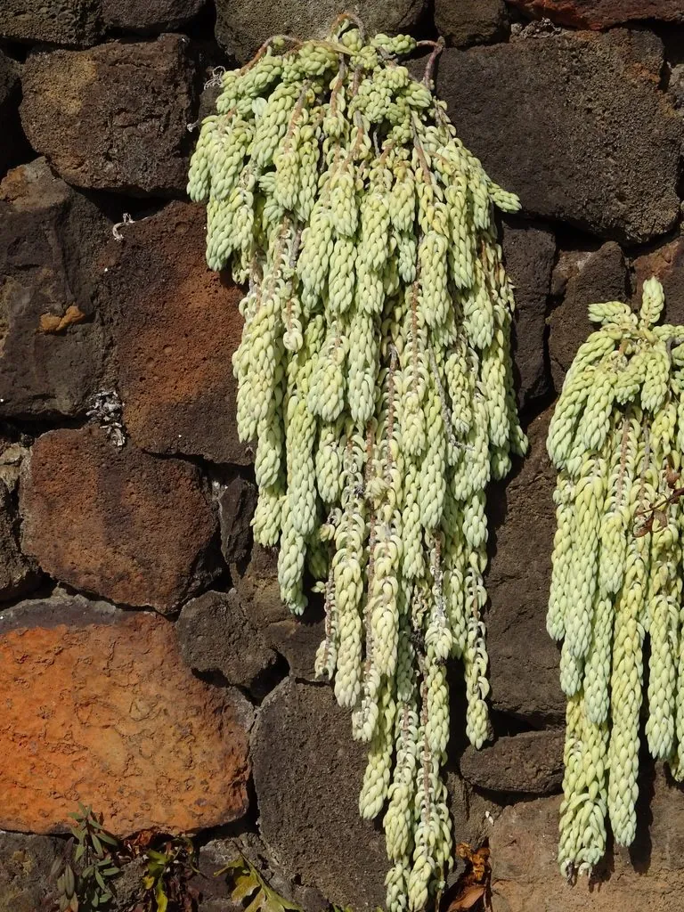

多肉植物 · 植物界
玉缀 Sedum morganianum

景天科景天属多年生肉质植物，茎蔓下垂、叶片纺锤形紧密排列如串串玉珠，是垂吊多肉中最受欢迎的种类之一。
- 分类
- 门被子植物门纲木兰纲目虎耳草目科景天科属景天属
- 栖息环境
- 原产墨西哥东部岩壁，栽培需光照充足、通风干燥
- 地理分布
- 原产墨西哥；中国各地作为垂吊多肉广泛栽培
- 保护级别
- 暂无评估；栽培观赏植物，不涉及保护等级
物种志
玉缀为景天科景天属多年生肉质植物，茎细长、匍匐或下垂，长可达六十厘米以上。叶片纺锤形，肥厚多汁，螺旋状紧密排列在茎上，表面覆白粉，呈灰绿色至蓝绿色，形似串串玉珠。花期夏季，花小，星形，粉红色至淡黄色，生于茎端；蓇葖果，种子细小。
玉缀原产墨西哥东部，中国各地广泛栽培。它喜光、喜凉爽干燥，春秋为生长旺季，夏季高温时需遮阴通风；适宜疏松透气、颗粒较多的基质，忌积水和闷热。茎蔓下垂、叶如珠串，是吊篮和高处垂吊栽培的理想材料；叶片碰触容易脱落，搬动时需轻拿轻放。繁殖以枝插和叶插为主，脱落的叶片落在土面也能生根。
形态与习性
- 株型茎下垂，长可达 60 cm
- 叶片纺锤形，螺旋排列如珠串
- 花期夏季，花小、粉红色
- 光照喜光，夏季适度遮阴
- 水分耐旱，忌积水
- 土壤颗粒较多的疏松基质
- 主要用途垂吊盆栽、吊篮绿化
趣味知识
- 玉缀的叶片像一串串玉珠紧密排列在茎上，因此又名玉帘。
- 它的叶片极易脱落，轻轻触碰就会掉下一片，搬动时要格外小心。
- 掉落的叶片落在土面就能生根长成新株，繁殖十分容易。